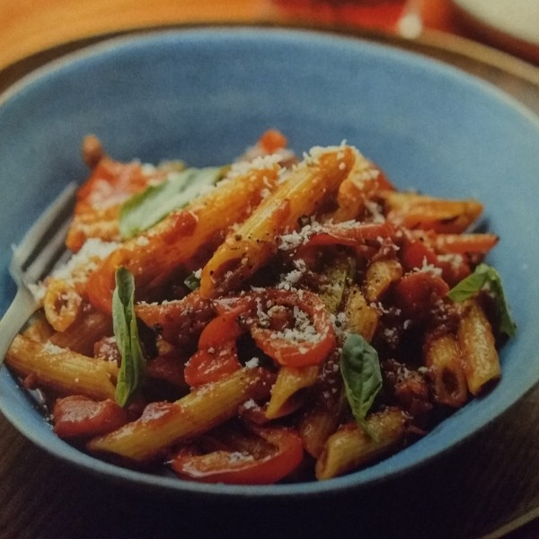

Speedy Penne all'Arrabbiata (with Fresh Basil & Parmesan)

Ready in 25 mins.
Serves 2.
Ingredients
- 2 red peppers, ½cm strips
- olive oil
- 2 garlic cloves, finely chopped
- 3 tbsp fresh basil, roughly chopped
- ½ red chilli, finely chopped
- 75g pancetta or smokey bacon, 1cm strips or cubes
- 1 tbsp balsamic vinegar
- 200g penne pasta
- 1 tin chopped tomatoes
- 3 tbsp Parmesan, grated
- salt and black pepper
Steps
- Preheat your oven to 220°C/Gas Mark 7. Put a large pan of water with 1 tbsp salt over a high heat and bring to the boil for the pasta. Prep the peppers and place on a baking tray. Coat evenly with 1 tbsp olive oil and season with ¼ tsp salt and a good grind of black pepper, then toss together. Cook on the top shelf of your oven for 15 mins.
- Prep the garlic, basil, red chilli and pancetta (if you've bought whole pancetta). If you're making this on the spur of the moment and don't have pancetta, you can use a bit of chopped smokey bacon instead.
- Heat 1 tbsp olive oil in a frying pan over a medium heat. Fry the pancetta until crispy, around 4 mins. Add the garlic and balsamic vinegar. Cook together for 1 min, the vinegar should evaporate. Add the tomatoes and the chilli (as much as you dare) and season with ¼ tsp salt and a few grinds of black pepper. Cook over a medium heat for around 10 mins, until you have a nice thick sauce.
- Meanwhile, cook the penne in the pan of boiling water for around 11 mins (or according to the packet instructions), until it is 'al dente' (cooked through but with a tiny bit of firmness left in the middle).
- Once the pasta is cooked, drain it and then stir into the thickened tomato sauce. Make sure the pepper is nice and soft and add it to the sauce too.
- Scatter the basil leaves over the pasta. Grate on the Parmesan and dig in.